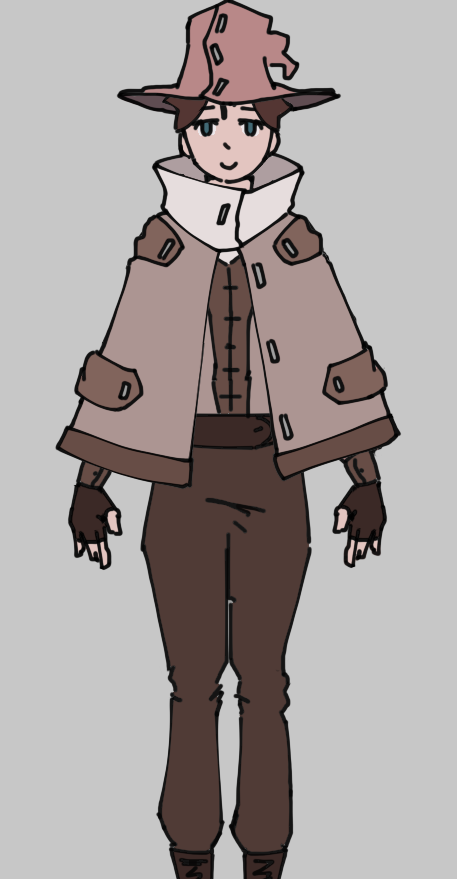
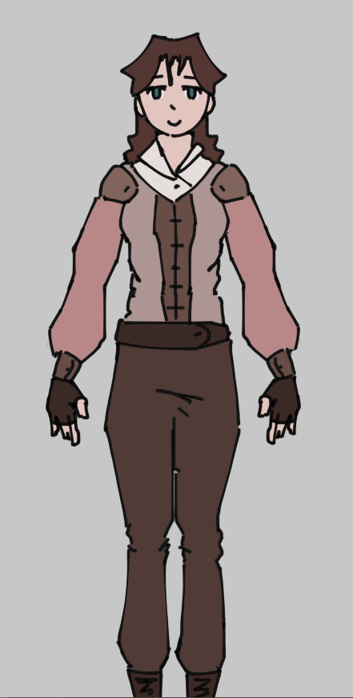

Blool
Criado sábado 16 julho 2022
O Blool foi umas das pessoas que sofreu uma mudança por causa da teleportação imperfeita de El Gato, por causa disso ele foi telerpotado com o genero oposto e por causa disso o blool vai ser referido com pronomes do genero feminino.
Ela foi teleportada perto de um castelo abandonado e achava que isso era um sonho, pegou uns trapo no castelo pra usar como roupa por enquanto, ela comecou a ouvir uns barulhos vindo das ruinas do castelo e foi investigar pra ver o que era, era uma bruxa que agora tava correndo atras dela dai elas correram por um tempo e chegou um cara numa carroagem que ja tava vindo pro castelo antes mesmo da blool ter sido teleportada la, dai esse cara da carroagem puxou uma arma e atirou na bruxa até ela morrer dai quando morreu saiu um espirito da bruxa que veio possuir a blool só que como ela é de outro mundo demorou pra ele possuir por completo e deu tempo pro cara que matou a bruxa ir la e interferir com agua benta mas ja foi tarde mais e agora a blool divide força vital com o espirito e se um morrer o outro morre tambem e eles nao cosneguem ficar muito longe um do outro por muito tempo se nao comeca a passar mal e pode levar a morte.
O cara que matou a bruxa disse que se chamva Eliott e fazia parte de uma guilda de caçadores de bruxa e que ele iria levar a blool pra ficar la até eles econtrarem um jeito de separar ela do espirito porque foi culpa dele que ela foi possuida e quer se redimir, ele tambem cria um chapeu customizado para ela poder guardar o espirito embaixo do chapeu porque se descobrirem que a blool esta possuida ele teme que ela pode ser presa ou até mesmo morta.
Poderes e limitações
Como todo o resto dos protagonistas ela nao consegue usar magia muito bem, ao invez de diretamente usar magia para caçar bruxas, a guilda faz uso de diferentes tipos de munições para seus integrantes, que usam essas munições em suas armas de longa distancia como estilingues, bestas, e armas de fogo rudimentares
As munições sao imbutidas com mana para quando acertar alguma coisa com força gerarem uma explosao de magia.
Ela usa um uniforme rank I dos caçadores junto com um chapeu, que foi feito especificamente para ela e para conter o espirito

Turquoise (Espirito)
Turquoise é o nome do espirito que fundiu com blool no comeco da sua jornada, ele não tem um nome originalmente, nem um gênero como homem ou mulher, mas blool decidiu começar a chamar ele de Turquoise porque essa ela acha que essa é a cor dele. Essa nao é a cor dele. Mas ela nao achou nenhuma outra palavra melhor.
Ele é um espirito de um antigo basilisko gigante, ele sobreviveu por milhares de anos em sua forma de espirito por possuindo bruxa após bruxa, ficando no corpo delas até nao puder mais.
Habilidades
Possuir
No começo de suas jornada Turquoise esta bem fraco por causa da batalha contra Eliott (cara que salvou a blool), mas durante a uma batalha que ocorreu na epoca que blool se encontrou com Wiir e Yob ele tinha recuperado forças o suficiente para possuir blool, ainda é mais dificil do que possuir alguem normal por blool ser de outro mundo, mas ele consegue fazer isso bem mais facilmente agora porque ja esta fundido com a força vital de blool e só precisa possuir parcialmente o corpo dela para controla-lo
Apos possuir o corpo dela, ele consegue controlala por completo mas ele nao consegue usar de magia, mas a aura de seu nucleo vai para o corpo de blool o que lhe da um aumento de força, velocidade e percepção, mas depois de ser possuido por muito tempo o corpo de blool fica muito cansado e ela cai no sono logo depois de Turquoise
Trivia
Muito cheirosa toma banho todo dia üòçÔ∏è
Versao antiga e desnecessariamente grande do primeiro texto
Origem
A blool foi teleportada para cerca das 5 da manha por perto de umas ruinas de um castelo abandonado, ela estava muito confusa e seu primeiro pensamento foi que ela de alguma forma tinha caido no sono no meio da call com seus amigos e aquilo era um sonho, ela foi até o castelo e econtrou alguns trapos antigos e usou de roupa para o momento (todos os personagens foram teleportados pelados). Após andar pelo lugar por um tempo ela começou a ouvir alguns barulhos estranhos, como achava que era um sonho e também por ser estupida demais pra ter medo da morte ela decidiu ir explorar mais afundo, ela descobriu que uma bruxa tinha decidido morar e fazer peripecias por ali, mesmo ainda pensando que isso era um sonho ela se cagou de medo e decidiu sair dali antes que a bruxa a percebesse.
Ela tentou sair do castelo sem ser percebida, mas ja era tarde demais, a bruxa ja estava atras dela. Ela comecou a correr desesperadamente da bruxa chegando a se machucar e se arranhar pela ruina do castelo o que a levou a perceber que isso talvez nao seja um sonho porque se fosse ela ja teria acordado depois de tanta adrenalina. Ela continuou correndo, com a bruxa se aproximando mais e mais a cada passo dado. Blool percebe alguma coisa se aproximando deles, antes mesmo de perceber muito bem o que era, ela ouve um som estrondoso que ecoa daquilo, é uma carroagem, que acabou de atirar na sua direção. Ela olha para tras e percebe que o tiro tinha acertado em cheio a bruxa que foi pega desprevinida, mas isso nao foi o suficiente para par a bruxa, ela de alguma forma continuou a correr, e ainda mais rapido dessa vez, a bruxa se recusa a perder uma presa se quer.
A carroagem se aproxima mais e mais da bruxa que ainda esta perseguindo blool, e eventualmente a alcança, de dentro da carroagem sai um cara segurando o que parece ser uma especie de arma bem rudimentar e ele acaba conseguindo matar a bruxa, mas após fazer isso o corpo da bruxa começa a se contorcer até de dentro dela sair um espirito maligno que estava possuindo e dando poderes a ela, o corpo da bruxa havia secado e o espirito nao poderia mais usa-lo, seu proximo alvo era blool, ela estava exausta ambos fisicamente e mentalmente e seria uma ótima candidata para um novo corpo. O espirito avança na sua direção quase imediatamente depois de sair do corpo da bruxa, com todas as poucas forças que ainda o restava ele consegue comecar o processo de posseção, mas o cara que antes tinha matado a bruxa conseguiu intervir com uma especie de agua benta, isso foi possivel pois o processo de posseção estranhamente demorou mais do que o comum no corpo de blool por conta dela ser de outro mundo, embora o processo nao ter conseguido fundir o corpo dos dois, ele conseguiu fundir parte da força vital de blool com o a do espirito e por causa disso, se um deles morrese, o outro morreria tambem.
Após todo esse alvoroço, blool desmaiou, e acordou mais tarde dentro da carroagem do cara que tinha matado a bruxa, ele se chamava <inserir nome que eu ainda tenho que pensar aqui>, e fazia parte da Guilda de Caçadores de Bruxa e era para la que eles estavam voltando, ele disse que o fato de blool ser possuida foi por culpa dele, e que blool poderia passar quando tempo for necessario morando na guilda enquanto ele tenta descobrir um jeito de separar a vida de blool e do espirito e que o fato dela ser possuida era pra ser mantido em total segredo, porque se os administradores da guilda descobrirem o que aconteceu, ela receberia pena de morte.
Backlinks: Lore do mundo:Lugares:Guilda dos Caçadores de Bruxa